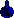
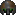
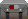
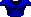
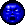
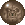
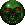
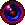
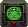
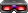

This section will talk about how to carefully limit the amount of health and ammo you give to the player
in order to provide a balanced challenge.
Health Bonus

The Health Bonus is a small blue vial that heals you by one percent, up to 200%. Best used randomly around the map or in small bunches
in order to give the player a small pool of health to work with.
Armour Bonus

The Armour Bonus is a small fragment of armour that gives you one percent of armour, up to 200%. Best used similarly to
the Health Bonus, scattered randomly or in small bunches.
Stim Pack
The Stim Pack is a small medkit, which heals 10 percent of your health, however only up to 100%. Best used a little
more organized than Health Bonuses, like a few after a battle or in a few areas around the map.
Medkit

The Medkit is a larger Stim Pack. It heals 25% up to 100%. Best used more reserved, and as a reward for finding a secret.
Armour
The Armour increases your armour to 100%. Best used very sparingly usually before a big battle to allow
for more damage taken during a fight.
Super Armour

The Super Armour increases your armour to 200%. You should try using it very sparingly, since it gives
a lot of armour, usually too much.
Supercharge

The Supercharge increases your health by 100% up to 200%. Be careful using this powerup because it gives you
a lot of health.
Megasphere

The Megasphere increases your health an armour to the highest value of 200%. Be very careful with
this powerup because it gives you a ton of health and armour. It is best to make this a reward for
finding a secret.
Invulnerability Sphere

The Invulnerability Sphere makes you immune to all damage for 30 seconds. This makes the powerup very valuable,
however it can also add strategy to a fight. For example, if you plave an Invul Sphere in the middle of an arena,
it makes it an important decision of when to pick it up. If you take it early, you may risk running out of the invulnerability
when you need it most.
Partial Invisibility

Partial Invisibility makes you harder to see. Demons will not notice you until you touch them or shoot.
It also decreases the accuracy of the demon's shots. This powerup is the strongest against hitscanners.
Using it against projectile based attacks may make it harder to dodge attacks, since the demons will aim
unpredictably.
Computer Map

The Computer Map reveals the whole map on your map screen. This does not apply to secret areas though.
Best used as a secret reward. Doesn't usually add much to the gameplay, since you won't be checking your
map often anyway.
Light Amplification Visor

The Light Amplification Visor allows you to see in the dark for 120 seconds. Your screen will receive
a green tint when this powerup is applied. Best used to mitigate dark areas for some time.
Items must be used sparingly to make the level difficult. In a way, the placement of items changes the difficulty of a map.
The best way to learn where and when to place items is by looking at the official maps in the game. Keep careful watch of
where items are located and how they are used.